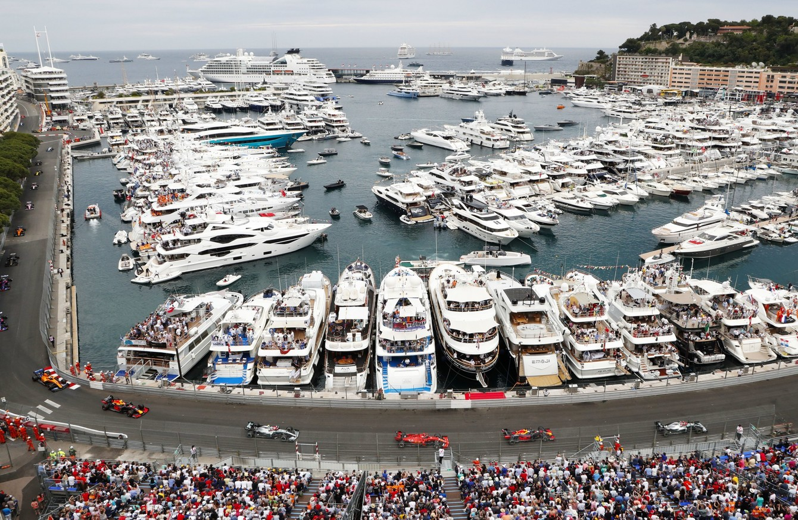
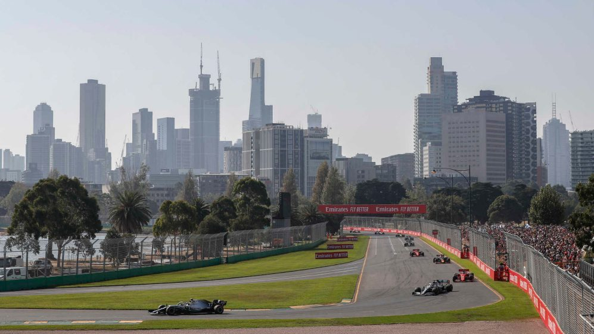
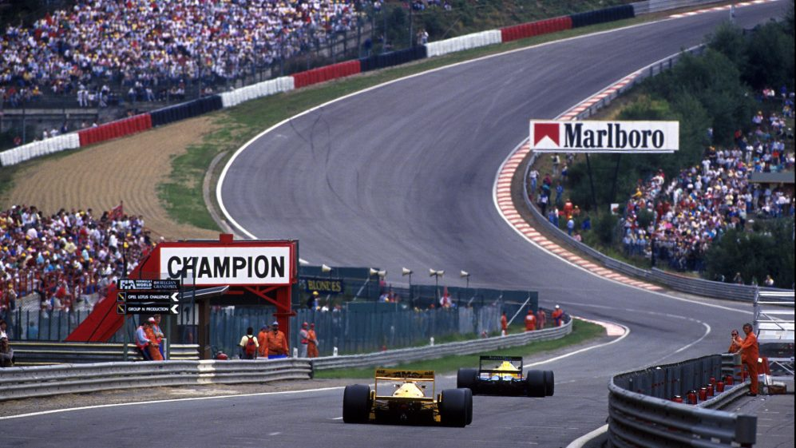
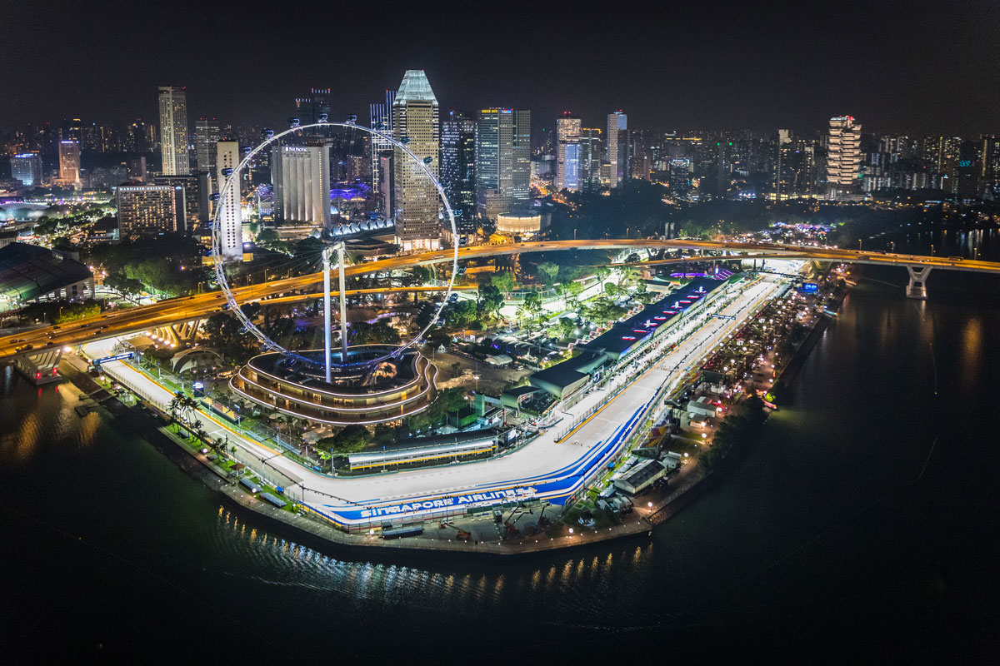
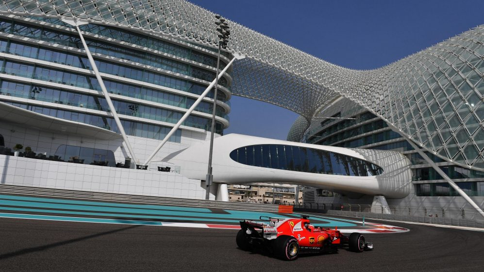

Er zijn heel veel verschillende circuits op de wereld en de race is natuurlijk elke keer in een ander land. Daarom is er ook heel veel variatie in de race tracks. Er zijn bijvoorbeeld stratencircuits, maar ook circuits waar in de nacht wordt gereden en natuurlijk hebben wij in Nederland het circuit van Zandvoort. Dit is een overzicht van een paar bijzondere circuits van de Formule 1.
Circuit de Monaco
Het eerste bijzondere circuit is het unieke circuit van Monaco. Het is een stratencircuit met hele smalle wegen en langs de baan staan barrières. Het is dus een echte uitdaging om hier te rijden en het vereist veel ervaring. Hierdoor gebeurt er altijd wel wat, en vaak eindigen er wel een paar coureurs in de muren. Dit en het feit Monaco voor veel coureurs hun thuis is, zorgt ervoor dat dit circuit zeer geliefd is bij de coureurs. Monaco is ook een heel rijk land, dus de Grand Prix hier is een groot, duur evenement met veel luxe. Het circuit gaat langs een haven met hele dure jachten en er is een prachtig uitzicht. Een leuk feitje is dat het team van Red Bull in Monaco niet gewoon een paddock heeft bij de andere teams, maar het heeft een groot drijvend platform met een zwembad en luxe zitplekken waar het personeel van het team verblijft in het race weekend.

Albert Park Street Circuit
Dit is het circuit van Melbourne. Het is zo bijzonder omdat hier altijd de eerste race van het jaar wordt gehouden. Albert Park is, net als Monaco, een stratencircuit en de auto's rijden er langs het mooie Albert Park Meer. Er wordt altijd heel erg naar uitgekeken, omdat iedereen er in het nieuwe seizoen weer vol tegenaangaat. Wat ook zeker bijdraagt aan de goede sfeer op dit circuit, is het feit dat het altijd lekker weer is in Australië in deze tijd van het jaar.

Autodromo Enzo e Dino Ferrari
Deze baan ligt in het plaatsje Imola in Italië en heeft een heftig verleden. Er zijn heftige dingen gebeurd op de Grand Prix van San Marino die hier in 1994 gehouden werd. Het horrorweekend begon al op vrijdag, toen coureur Rubens Barrichello een zware crash maakte doordat hij de lucht in gelanceerd werd. Daarna raakte hij bewusteloos, maar hij overleefde het wel. Echter was het de volgende dag goed raak, toen Roland Ratzenberger overleed nadat hij uit de bocht vloog en zijn schedel brak. En daarmee was de nachtmerrie nog niet afgelopen, want op de dag van de race overleed de racelegende Ayrton Senna. Hij reed over een oneffenheid in de weg en verloor daardoor de grip. Zijn auto reed rechtdoor en crashte in de muur. Senna werd nog naar het ziekenhuis gebracht, maar daar werd vastgesteld dat hij meteen na de crash overleden was. Ze konden hem niet meer redden. Dit jaar is er voor het eerst sinds dat weekend weer een race gehouden, en dankzij de goede veiligheid tegenwoordig is alles goed gegaan.

CM.com Circuit Zandvoort
Er ligt natuurlijk ook een circuit in ons eigen land. Het circuit van Zandvoort stond in 2020 voor het eerst in 35 jaar weer op de planning, maar werd door covid-19 geschrapt. Maar gelukkig komt hij volgend jaar, als alles goed gaat, wel aan bod. Het circuit heeft 15 bochten en een totaal hoogteverschil van bijna 8 meter. Dat zou je niet verwachten in Nederland. Fun fact: nog nooit is de Grand Prix van Zandvoort gewonnen door een Nederlander.

Marina Bay Street Circuit
Het Marina Bay circuit ligt in Singapore. Het unieke aan dit circuit is dat de race die hier wordt gereden, plaatsvindt in de nacht! Singapore is een echte trekpleister, met de auto's die onder de duizenden lichten door scheuren en de tropische hitte. En dat allemaal in de mooie, rijke stad. Ook is er een tunnel en kunnen er prachtige foto's van de auto's gemaakt worden, als ze scheuren door de straten in het donker. Dan zie je de vonken onder de auto's namelijk extra goed.

Yas Marina Circuit
Op Yas Marina wordt de laatste race van het seizoen verreden. Deze race eindigt ook in het donker, maar begint in de middag. Het circuit van Abu Dhabi is de duurste track de ooit gebouwd is, hij kostte wel 250 miljoen dollar. En dat is ook wel te zien aan het peperdure hotel dat half over het circuit heen ligt en de haven met luxe boten waar de auto's langs racen. Het is dan ook de perfecte plek om het jaar mee af te sluiten en er hangt altijd een goede sfeer.
